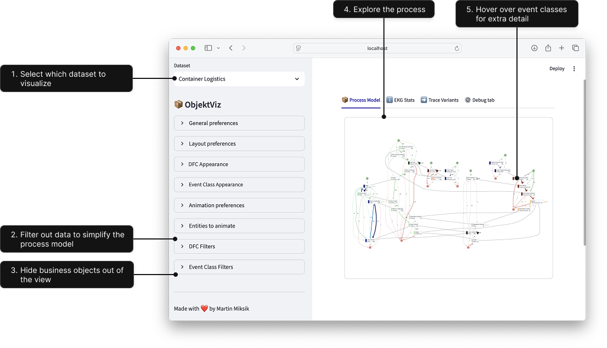
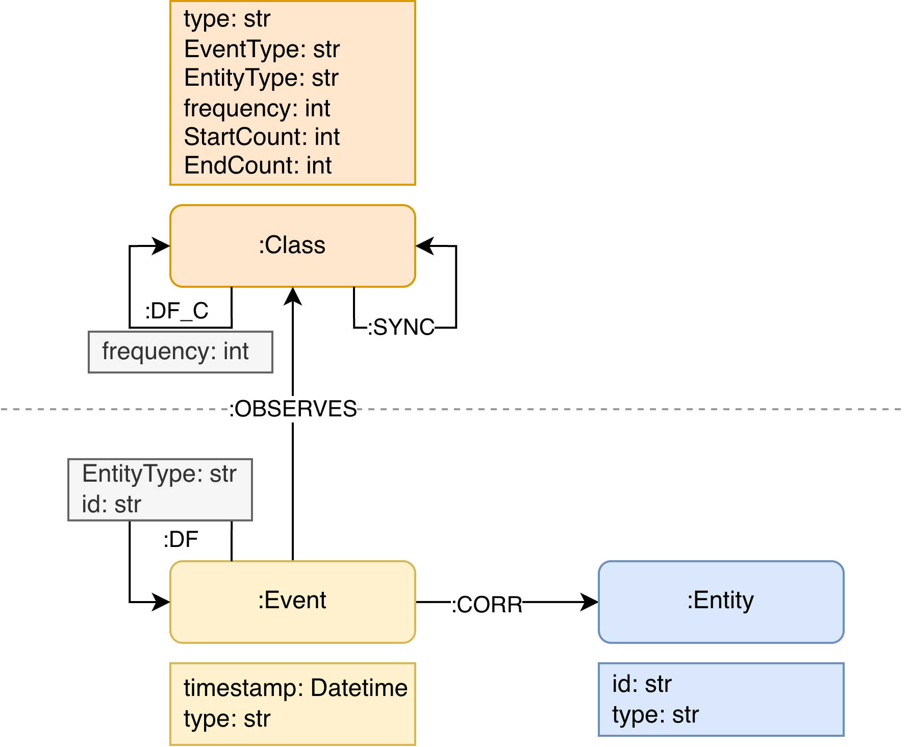

Getting Started

ObjektViz is a visualizer for object-centric process models that enables users to explore and analyze even very complex processes involving multiple interacting objects. Traditional process mining tools struggle with complex, multi-object processes. ObjektViz is designed specifically for exploring these object-centric processes through customizable, interactive dashboards.
Features
- 🔍 Interactive Visualization: Explore object-centric process models with intuitive visualizations.
- 🤝 Multi-Object Support: Analyze processes involving multiple interacting objects seamlessly.
- ⚙️ Customizable: Every dataset, every process is different. ObjektViz allows you to customize visualizations to fit your data.
- 🧩 Manage Complexity: Designed to handle very complex processes without overwhelming the user.
- ▶️ Token Replay: Replay the flow of tokens through the process to understand dynamics and interactions, even for multi-object scenarios.
- 🔄 Morphing Visualizations: Smoothly transition between different views and representations of the process model to understand various aspects of the data.
Useful Concepts to Know
- Streamlit: For building Python web apps - see Streamlit docs
- Graph databases: Basic concepts - see Neo4j introduction
- Process mining: Event logs and process models - see Process Mining intro
What is ObjektViz composed of?
ObjektViz provides three key components:
- Backend: Transforms EKG data into
DOTgraph descriptor - Frontend: Renders the
DOTgraph descriptor into interactive process models in the browser - Streamlit-based UI layer: Interactive controls and components
Building Dashboards with ObjektViz
We will build interactive dashboards to view OCEL dataset that allows you to:
- Explore complex multi-object processes visually
- Filter and shade nodes/edges by any attribute
- Animate token replay through the process
Setting up ObjektViz
- Clone the repository:
- Navigate to the project directory:
- Install the required dependencies (we use uv to manage the Python environment and dependencies):
Quick Start
run uv run python -m streamlit run examples/generic_ocel_viewer.py to see ObjektViz in action on the included OCEL datasets.
Convert OCEL Data to EKG Format
To import your own OCEL dataset, you need to convert it into EKG format first and then generate aggregated views (i.e., process models) from it.
We provide scripts to help you with this process in the examples folder.
uv run python examples/ocel/kuzudb/process_ocel_to_kuzudb.py path/to/your/ocel.json path/to/save/ekg.kuzu
Building EKG from scratch
If you want to build your own EKG from scratch, check out the section on "Data Requirements" below. It explains the core EKG elements and the expected database structure in more detail.
Copy and Modify Template Dashboard
Copy one of the example dashboards (e.g. 'examples/generic_ocel_viewer.py') script and modify it to point to your newly created EKG database. The line to change is where the database is initialized:
Run your modified dashboard:
Example
Now you should be able to see your own OCEL dataset visualized in the dashboard! From here, you can start customizing the dashboard to fit your specific needs and explore your data in depth.
Dashboard Template Structure
graph LR
A[1. Database Connection] --> B[2. Streamlit Setup] --> C[3. Constants] --> D[4. Controls] --> E[5. Generate DOT] --> F[6. Visualization]
style A fill:#e1f5fe
style B fill:#f3e5f5
style C fill:#e8f5e8
style D fill:#fff3e0
style E fill:#fce4ec
style F fill:#f1f8e9 Tip
You are free to structure your dashboard as you like, the above is just a common pattern we use in our examples. The key is to have a Streamlit page where you can place your control components and visualization components.
1. Set up database connection
Start the dashboard by establishing a connection to your EKG database
Neo4j Support
We also provide drop-in adapter for Neo4j, simply rplace the KuzuDB connection with a Neo4j driver and repository.
2. Setup Streamlit page layout and tabs
objektviz_sidebar = ov_components.setup_objektviz_page()
process_model_tab, ekg_stats_tab, trace_variants_tab, debug_tab = st.tabs(
["📦 Process Model", "ℹ️ EKG Stats", "➡️ Trace Variants", "⚙️ Debug tab"]
)
...
Info
Never forget to call ov_components.setup_objektviz_page(), since it also registers necessary session state variables
3. Setup constants and default values for the dashboard
PROCLET_TYPES = ["EventType,EntityType"]
DEFAULT_LAYOUT_PREFERENCES = DefaultLayoutPreferences(...)
DEFAULT_CONNECTION_PREFERENCES = DefaultConnectionPreferences(...)
Default Values on Page Load
If you want to show a specific view on page load, you can pass values to the Default[XXX]Preferences constructor
4. Setup control components to configure the visualization
# General preferences that affect the entire visualization
with objektviz_sidebar:
class_type, ... = ov_components.general_preferences(PROCLET_TYPES)
# Now that we know the class type (i.e., which process model view the
# user wants to see), we can query the database for the relevant
# data to set up the rest of the control components
event_classes_db, dfc_db, sync_db = queries.proclet(class_type)
# Register the rest of the control components
with objektviz_sidebar:
... = ov_components.preferences_group(...)
root_edge_filter = ov_components.frequency_filter_per_entity_type(...)
...
Custom Filtering Logic
Writing custom filtering logic is probably one of the first changes you will want to make to the dashboard. Check out the streamlit controls documentation for more on how to do it.
5. Generate DOT source based on the user preferences and database query results
# Gather the preferences, filters and shaders into a single config
# object to pass to the DOT generation function
objektviz_config = BackendConfig(
dfc_preferences=dfc_preferences,
event_class_root_filter=root_node_filter,
...
)
# Convert database query results into DotNode and DotEdge instances, applying
# filters and shaders in the process
wrapped_values = ov_kuzu.from_kuzu_to_dot_elements(
event_classes_db, dfc_db + sync_db, objektviz_config
)
# Generate DOT source
dot_src, edge_node_map, node_edge_map, node_node_map = generate_dot_source(
*wrapped_values
)
6. Display the visualization
# Create data payload that will be passed to ObjektViz fronend
graphviz_payload = GraphFrontendPayload(
dot_source=dot_src,
...
)
# Render the visualization in the process model tab
with process_model_tab:
ov_components.full_proclet_view(
graph_payload=graphviz_payload,
queries=queries,
class_type=class_type,
...
)
Data Requirements
ObjektViz works with Event Knowledge Graphs (EKGs) - graph representations of event data with pre-computed aggregated views.
Core EKG Elements
| Element | Description | Example |
|---|---|---|
| :Class nodes | Event classes (aggregated events) | "Order Placed", "Payment Processed" |
| :DF_C edges | Directly-follows relationships | Order Placed → Payment Processed |
| :SYNC edges | Cross-entity synchronizations | Place Order (Item) ↔ Place Order (Order) |
EKG Metamodel

Database Options
| Database | Best For | Setup | Notes |
|---|---|---|---|
| KuzuDB | Prototyping, learning | Easy (embedded) | Deprecated technology |
| Neo4j | Production | Medium (server) | The fold standard for LPG |